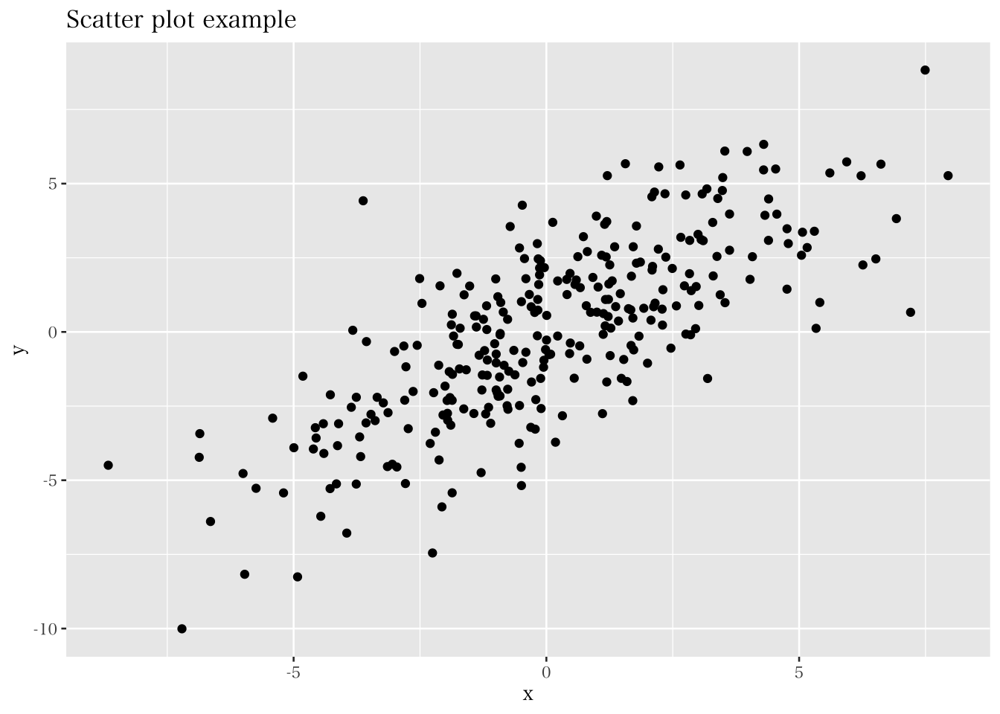

8.1 回帰モデル概要
本章では、二変数間の関係について「予測」と「検証」の二点からより深掘りしていく方法を紹介する。マーケティングを実行する企業の立場に立てば、マーケティング二関連する方策や投資を導入することで成果（売上や利益）を向上させたいと考えるだろう。そのため、企業も闇雲に意思決定を行うわけには行かず、その意思決定によって、どの程度の成果の向上を見込めるかの予測ができると良い。最も基本的な予測の形式は、ある説明変数（先行要因）が被説明変数（成果）とどのような影響を与えるのかを特定し、それに基づき予測値を算出するという方法である。
二変数間の関係を捉える分析手法として6章では相関係数を紹介した。相関係数は二変数間の線形関係を表す -1から 1 の値を取る指標である。 しかしながら、相関係数は線形関係の強さ（どれだけデータが直線上に近く分布しているか）を表しているものの、示されている直線の切片や傾きといった線形関数の特徴は捉えられない。例えば、下図の二つのデータは異なる切片と傾きを有しているが、相関係数は等しくなるはずである。
ここで、二つの異なる変数 \(y,~x\) の関係を \(\small y=f(x)\) のように\(y\)を\(x\)の関数（\(f(x)\)）で示すというアイディアで分析を行う。このとき \(y\) を「被説明変数（Explained variable）もしくは従属変数（dependent variable）」、\(x\) を「説明変数（Explaining variable）もしくは独立変数（independent variable）」という。そして、被説明変数と説明変数の関係を特定化した式のことを一般的に回帰モデルという。最も基本的な関数型の特定方法は以下のような一次関数による特定化である。
\[ y=\beta_0+\beta_1x \] このとき、\(\small \beta_0\) は切片、\(\small \beta_1\) は傾きを表す係数であり、回帰係数と呼ばれる。
回帰モデルは線形の関係を捉えているものの、実際にデータを入手し散布図を作成すると、以下のように、直線とは異なる結果を得る。そのため、上記のモデルは正確な表現でないことがわかる。

分析者がデータとして得る情報は、\(y\) や \(x\) の実現値であり、回帰モデルの切片や傾きの値は直接はわからない。そこで、モデルで捉えた直線と実現値のズレを考え、得たデータから回帰モデルのパラメータ（係数）を推定するという方針をとる。モデルで捉えた直線による（係数の推定値に基づく）\(y\) と\(x\) の関係は、\(\small x=x_i\) のとき、\(y_i\) の予測値である\(\small \hat{y}_i\)（ワイハット）と、係数の推定値 \(\small \hat{\beta}_0\)、 \(\small \hat{\beta}_1\) を用いて以下のように定義できる。
\[ \hat{y}_i=\hat{\beta}_0+ \hat{\beta}_1 x_i \]
係数の推定値 \(\small \hat{\beta}_0\) と \(\small \hat{\beta}_1\) を求めるための計算方法は、（最尤法や積率法など）いくつかあるものの、本書では最小二乗法（Ordinary least square: OLS）という方法に着目し紹介する。OLS推定量（OLS Estimator: OLSE）の求め方の直感は、以下の図の通り、観測値と回帰直線間の距離の合計（残差平方和）を最小にするように計算される。
予測値のモデルで示されているのは、データを分析した結果求めたOLSEに基づく説明変数 \(x_i\) と、\(\small \hat{y}_i\) との関係である。\(\small \hat{y}_i\) は被説明変数 \(y_i\) の「予測値（predicted value）」や「理論値（fitted value）」と呼ばれるものであり、\(y_i\) の観測値とは異なる値であることに注意が必要である。このとき、観測値と予測値のズレ（\(\small y_i-\hat{y}_i\)）を「残差（residual）」という。OLSは残差を \(\hat{u}_i\) とし、以下で示される、残差平方和（二乗和）を最小にするように推定量を求める方法である。なお、OLSEの計算仮定については、秋山（2018）が詳しく説明をしてくれている。
\[ \sum_{i=1}^n\hat{u}_i^2=\sum_{i=1}^n(y_i-\hat{y}_i)^2=\sum_{i=1}^n\left(\hat{y}_i-(\hat{\beta}_0+ \hat{\beta}_1 x_i)\right)^2 \] これを解くと、以下のような推定量を得る。 \[ \hat{\beta}_0=\bar{y}-\hat{\beta}_1\bar{x} \]
\[ \hat{\beta}_1=\frac{\sum_{i=1}^n(x_i-\bar{x})(y_i-\bar{y})}{\sum_{i=1}^n(x_i-\bar{x})^2} \]
Rによる回帰分析は、lm()という関数（linear model）を用いて簡単に実行できる。この関数内では、lm(y ~ x, data = df) という要領で、説明変数と被説明変数を \(\sim\)（チルダ）で繋いでモデルを指定する。例えば、先程の企業データにおける2019年の観測を用いて、従業員数と売上高の関係について分析するためには、以下のように分析を実行する。
## (Intercept) emp
## 22809.67863 58.13194分析の結果、定数項（Intercept）は 9501.4 で、傾きは 58.1 であることがわかった。つまり、従業員数を一単位増やすと、売上高が58.1（百万円）増えることを示唆している。仮に従業員数が10人であれば、売上高の「予測値」は以下のように計算できる。
\[ 9501.4+58.1\times 10=10082.4 \]
回帰分析によって被説明変数の予測値を計算が可能なことを説明したが、この予測値は実際の観測値とは異なる。では、ここで求められた予測値はどのように解釈できるものなのだろうか。それを理解するために、残差と予測値に関する以下の四つの性質を紹介する。
- 残差の和は0：
\[ \sum_{i=1}^n\hat{u}_i=0 \]
- 残差と説明変数の積和は0：
\[ \sum_{i=1}^n x_i\hat{u}_i=0 \]
- 1と2より：
\[ \sum_{i=1}^n \hat{y}_i\hat{u}_i=0 \]
- 予測値の平均と観測値の平均は等しい:
\[ \bar{y}=\bar{\hat{y}} \]
- 回帰直線は（\(\bar{x}, \bar{y}\)）の座標を通る:
\[ \bar{y}=\hat{\beta}_0+\hat{\beta}_1\bar{x} \] つまりOLSでは、回帰直線と各観測値のプラス方向のズレとマイナス方向のズレが釣り合う（残差の和が0）ような予測を行っている。その上で、予測値は、説明変数 \(x\) が与えられたとき、被説明変数が「平均的に」どんな値を取るのかを示していると解釈できる。回帰モデルと平均との関係については次節で確率的側面からより詳しく説明を加える。
回帰分析による予測による精度を調べるために、分析したモデルがどの程度被説名変数全体の分散を説明しているかという指標によってモデルの適合度を測る。一般的には、決定係数（\(\small R^2\)）という指標によってモデル適合度が示される。\(\small R^2\) は以下のように定義される。
\[ R^2=1-\frac{\sum(y_i-\hat{y}_i)^2}{\sum(y_i-\bar{y})^2}=\frac{\sum(\hat{y}_i-\bar{y})^2}{\sum(y_i-\bar{y})^2} \]
この指標は、被説明変数の分散を説明変数がどの程度説明するかの割合を表しており、0以上1以下の値を取る。例えば \(\small R^2\) が0.80であるならば、被説名変数の変動の80%をモデルが説明しているということになる。そのため、\(\small R^2\) は、回帰モデルの説明力として解釈される。しかしながら、予測という目的に対して近年は、機械学習などの発展的な手法が応用される事が多く、\(\small R^2\) を軸に予測を行うことは少なくなってきている。
また、予測ではなく説明変数の効果（係数）についての検証や解釈に関心がある場合、回帰分析における \(\small R^2\) の重要性は低くなる。特に、ビジネス分野における研究では、係数の推定や検定に焦点をあわせることが多い。本書においても、予測よりも係数に関する検証にを重視する立場を取る。社会科学領域での分析では、\(\small R^2\) が低くなることは珍しくない。そんな中で、「\(\small R^2\) が低いからその回帰分析結果は意味がない」ということにはならない。研究者の目的が、関心のある変数同士（例、市場志向と企業成果）の関係性（有意性や影響の強さ）を検証したいというものである場合、仮に \(\small R^2\) が低くても、きちんと両変数の関係を分析できる調査設計や分析を実行しているならば、その検証は有意義なものになる。つまりここで強調したいのは、係数の検証や解釈を重視して研究を行う場合、「\(\small R^2\) がいくつ以上（以下）だから良い（ダメ）」という議論は目的と整合的ではなく、重要ではなくなるということである。 本節では、OLSを中心にデータから回帰係数を推定するプロセスに目を向け、予測値と決定係数について紹介した。しかしながら、先述の通り我々は多くの場合特定の変数が成果変数に与える影響の検証に関心がある。次節では確率的な視点から理論的に回帰分析を理解する事により、回帰分析の結果の解釈についてより詳しく学ぶ。